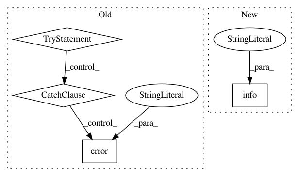

a63058774af9690888e8e5586dd956df3669e6d4,deploy/create_project.py,,create_stackdriver_account,#Any#,471
Before Change
return
// Verify account was created.
try:
runner.run_gcloud_command(["alpha", "monitoring", "policies", "list"],
project_id=project_id)
return
except subprocess.CalledProcessError as e:
logging.error("Error reading Stackdriver account %s", e)
print("Could not find Stackdriver account.")
def create_alerts(config):
"Creates Stackdriver alerts for logs-based metrics.
// Stackdriver alerts can"t yet be created in Deployment Manager, so create
// them here.
After Change
project_id = config.project["project_id"]
if _stackdriver_account_exists(project_id):
logging.info("Stackdriver account already exists")
return
message =
------------------------------------------------------------------------------
In pattern: SUPERPATTERN
Frequency: 3
Non-data size: 4
Instances
Project Name: GoogleCloudPlatform/healthcare
Commit Name: a63058774af9690888e8e5586dd956df3669e6d4
Time: 2019-02-04
Author: noreply@google.com
File Name: deploy/create_project.py
Class Name:
Method Name: create_stackdriver_account
Project Name: MTG/freesound
Commit Name: 0f7bacc26eec44c9f00f5d7666c1f87f0e051ce2
Time: 2017-11-10
Author: andres.ferraro@upf.edu
File Name: search/management/commands/reindex_solr.py
Class Name: Command
Method Name: handle
Project Name: home-assistant/home-assistant
Commit Name: ab8c127a4a466f2c137239c0eb06c8143adea106
Time: 2018-11-18
Author: JeffLIrion@users.noreply.github.com
File Name: homeassistant/components/media_player/firetv.py
Class Name:
Method Name: setup_platform